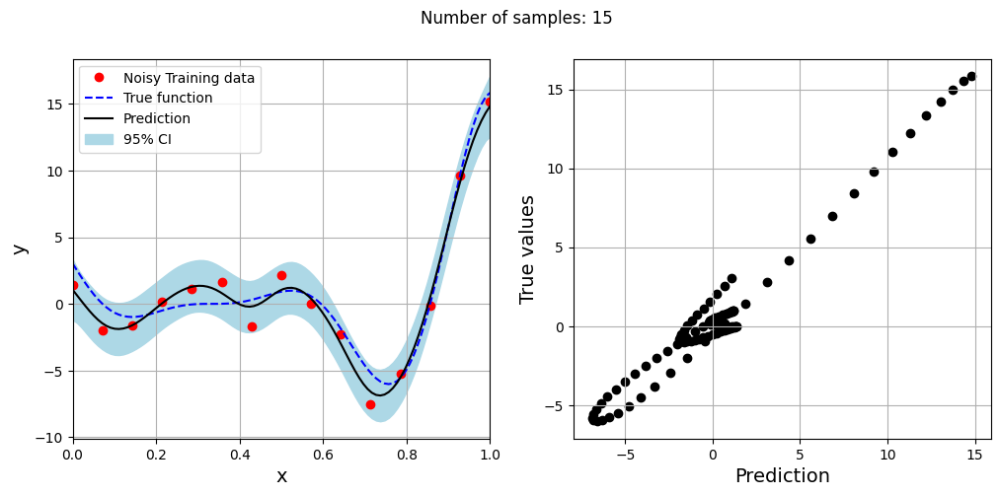
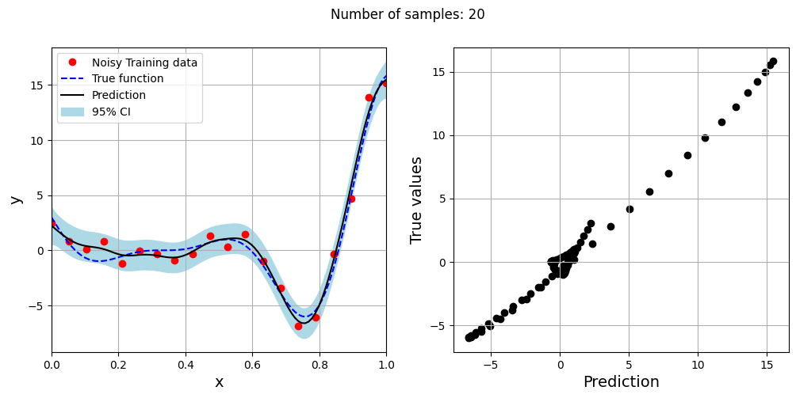
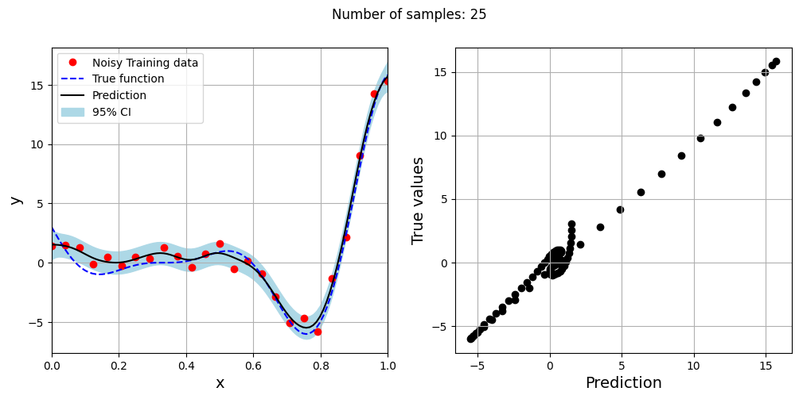
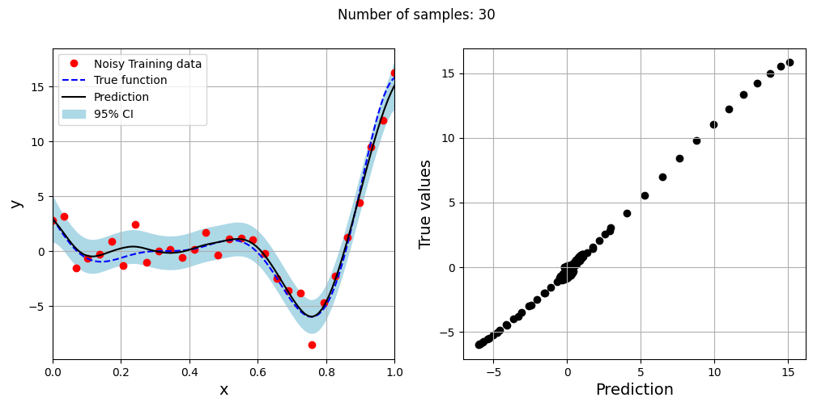
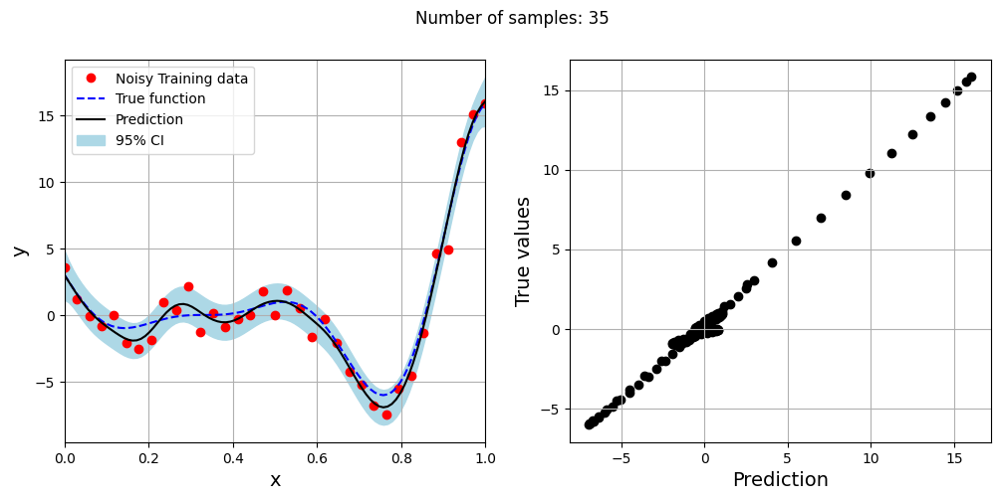
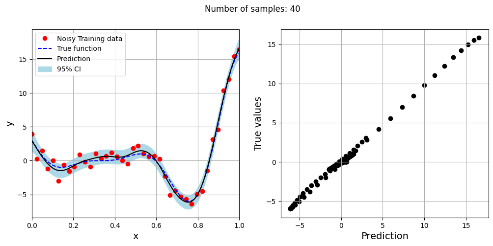

Engineering Modeling and Design Optimization#
Modeling Noisy Data using Regression Kriging#
import numpy as np
from smt.surrogate_models import KRG
from smt.problems import TorsionVibration
from smt.sampling_methods import LHS, FullFactorial
import matplotlib.pyplot as plt
from sklearn.metrics import mean_squared_error
from sklearn.preprocessing import MinMaxScaler, StandardScaler
from sklearn.decomposition import PCA, KernelPCA
from scipy.stats import norm
# Defining the noisy forrester function
forrester = lambda x: (6*x-2)**2*np.sin(12*x-4) + norm.rvs(scale = 1.0, size=x.shape)
# Plotting data
xplot = np.linspace(0, 1, 100)
yplot = (6*xplot-2)**2 * np.sin(12*xplot-4)
# Creating array of training sample sizes
samples = np.array([15,20,25,30,35,40])
# Initializing nrmse list
nrmse = []
# Fitting with different sample size
for sample in samples:
xtrain = np.linspace(0, 1, sample)
ytrain = forrester(xtrain)
# Fitting the kriging
sm = KRG(theta0=[1e-2], corr='matern52', theta_bounds=[1e-6, 1e2], print_global=False, eval_noise = True)
sm.set_training_values(xtrain, ytrain)
sm.train()
# Predict at test values
yplot_pred = sm.predict_values(xplot).reshape(-1,)
yplot_var = sm.predict_variances(xplot).reshape(-1,)
# Calculating average nrmse
nrmse.append(np.sqrt(mean_squared_error(yplot, yplot_pred)) / np.ptp(yplot))
# Plotting prediction
fig, ax = plt.subplots(1,2, figsize=(12,5))
ax[0].plot(xtrain, ytrain, 'ro', label='Noisy Training data')
ax[0].plot(xplot, yplot, 'b--', label='True function')
ax[0].plot(xplot, yplot_pred, 'k', label='Prediction')
ax[0].fill_between(xplot, yplot_pred - 2*np.sqrt(yplot_var), yplot_pred + 2*np.sqrt(yplot_var), color='lightblue', label='95% CI')
ax[0].set_xlim((0, 1))
ax[0].set_xlabel("x", fontsize=14)
ax[0].set_ylabel("y", fontsize=14)
ax[0].grid()
ax[0].legend()
ax[1].scatter(yplot_pred, yplot, c="k")
ax[1].set_xlabel("Prediction", fontsize=14)
ax[1].set_ylabel("True values", fontsize=14)
ax[1].grid()
fig.suptitle("Number of samples: {}".format(sample))






# Defining the torsion vibration problem
ndim = 15
problem = TorsionVibration(ndim=ndim)
# Defining noisy version of the problem
noisy_problem = lambda x: problem(x) + norm.rvs(scale = 1.0, size=1)
# Calculating NRMSE with and without noisy training data
# Creating array of training sample sizes
samples = np.array([10,20,30,40,50,60,70,80])
# Initializing nrmse list
nrmse = []
nrmse_noisy = []
# Creating testing data for the problem
test_sampler = FullFactorial(xlimits=problem.xlimits)
num_test = 50
xtest = test_sampler(num_test)
ytest = problem(xtest)
# Fitting with different sample size
train_sampler = LHS(xlimits=problem.xlimits, criterion="ese")
for sample in samples:
num_train = sample
xtrain = train_sampler(num_train)
ytrain = problem(xtrain)
noisy_ytrain = noisy_problem(xtrain)
# Fitting the kriging
sm = KRG(theta0=[1e-2], corr='squar_exp', theta_bounds=[1e-6, 1e2], print_global=False)
sm.set_training_values(xtrain, ytrain)
sm.train()
# Fitting the kriging to noisy data
sm_noisy = KRG(theta0=[1e-2], corr='squar_exp', theta_bounds=[1e-6, 1e2], print_global=False, eval_noise = True)
sm_noisy.set_training_values(xtrain, noisy_ytrain)
sm_noisy.train()
# Predict at test values
ypred = sm.predict_values(xtest)
noisy_ypred = sm_noisy.predict_values(xtest)
# Calculating average nrmse
nrmse.append(np.sqrt(mean_squared_error(ytest, ypred)) / np.ptp(ytest))
nrmse_noisy.append( np.sqrt(mean_squared_error(ytest, noisy_ypred)) / np.ptp(ytest) )
# Plotting NMRSE
fig, ax = plt.subplots()
ax.plot(samples, np.array(nrmse), c="k", marker=".", label = 'Deterministic Data')
ax.plot(samples, np.array(nrmse_noisy), c="r", marker=".", label = 'Noisy Data')
ax.grid(which="both")
ax.legend()
ax.set_xlabel("Number of samples", fontsize=14)
ax.set_ylabel("Normalized RMSE", fontsize=14)
Text(0, 0.5, 'Normalized RMSE')
Feature scaling for engineering modeling#
# Minmax scaling
minmax_scaler = MinMaxScaler()
# Standard scaling
std_scaler = StandardScaler()
# Creating a model with and without scaling
num = 40
xtrain = train_sampler(num)
ytrain = problem(xtrain)
xtrain_scaled = minmax_scaler.fit_transform(xtrain)
# Fitting the kriging using scaled data
sm_scaled = KRG(theta0=[1e-2], corr='squar_exp', theta_bounds=[1e-6, 1e2], print_global=False)
sm_scaled.set_training_values(xtrain_scaled, ytrain)
sm_scaled.train()
# Fitting the kriging using unscaled data
sm = KRG(theta0=[1e-2], corr='squar_exp', theta_bounds=[1e-6, 1e2], print_global=False)
sm.set_training_values(xtrain, ytrain)
sm.train()
# Predicting on test data
ypred_scaled = sm_scaled.predict_values(minmax_scaler.transform(xtest))
ypred = sm.predict_values(xtest)
print("NRMSE for scaled data:", np.sqrt(mean_squared_error(ytest, ypred_scaled)) / np.ptp(ytest))
print("NRMSE for unscaled data:", np.sqrt(mean_squared_error(ytest, ypred)) / np.ptp(ytest))
NRMSE for scaled data: 0.09674368894133425
NRMSE for unscaled data: 0.09674368894128359